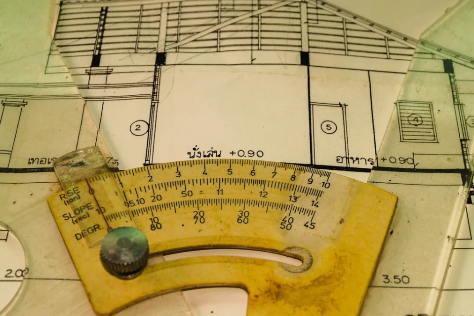
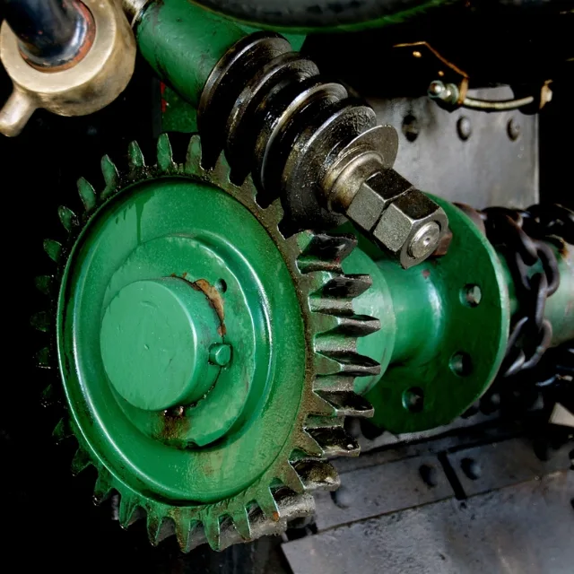
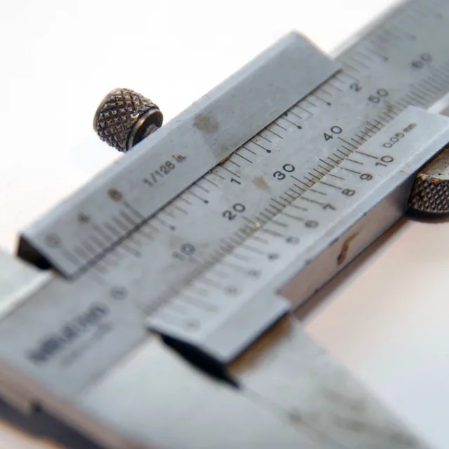

How we work

No two projects here have ever been the same, and the process has never pretended otherwise.
The problem with a universal method

An agency that builds one universal methodology ends up serving the methodology. The process grows heavier than the work it was meant to carry, and every project is bent to fit it whether or not the shape suits.
The client pays for that weight twice. Once in money, because the overhead is real and it is billed. Once in time, because a heavy process is slowest exactly when a deadline is tightest — which is when top-tier providers most often turn work away.
Starting from the project

The alternative is not the absence of a process. It is a process that bends. Each project is read for what it actually needs, and the method is assembled to match rather than imposed and worked around.
A process that bends is what keeps a hard deadline realistic and a budget honest, and it is the reason a studio this size can take on work that would otherwise go to a firm three times the cost.
What that means for a brief
Nothing formal is required to begin. A sentence is enough. If the shape of the thing is already known, three facts make the first reply useful — what needs making, roughly when, and roughly what it is worth. If it is not known yet, working that out counts as part of the work, and it is usually the part that decides whether the rest goes well.
Who you would be working with is in Who is behind it.